Презентация результатов проекта
"В гости к камню"
"В гости к камню"

Проект поддержан Фондом президентских грантов в 2020 году
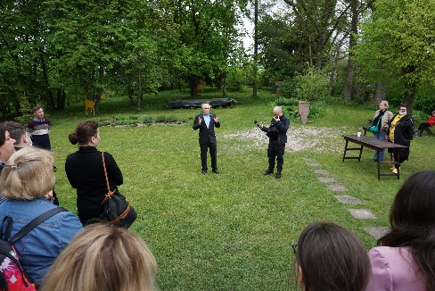
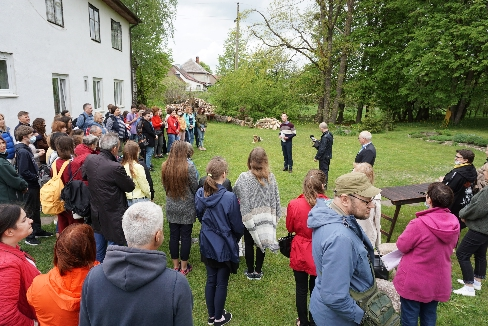
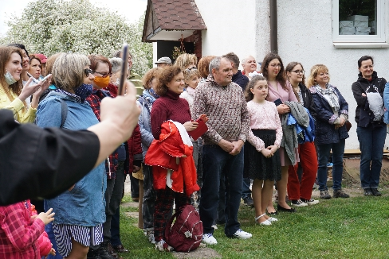
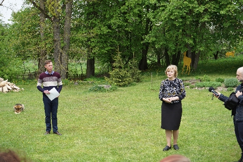
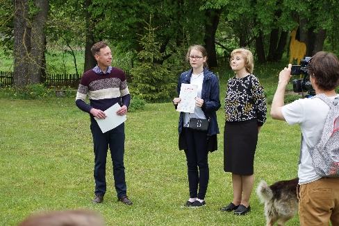
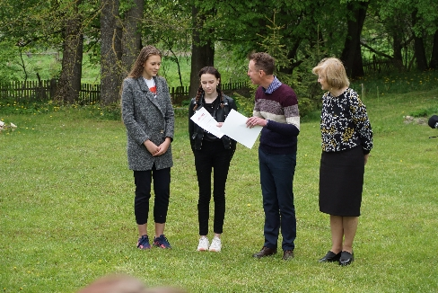
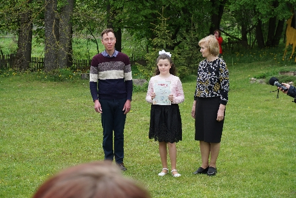
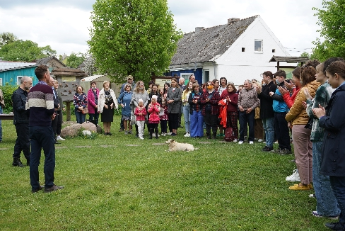
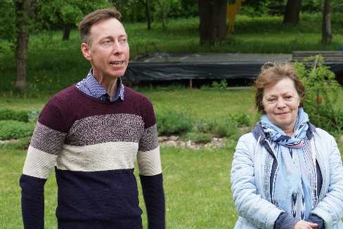
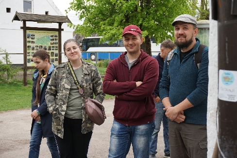
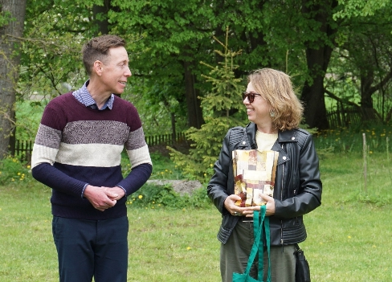
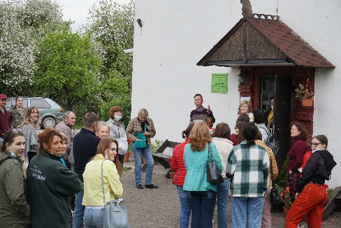
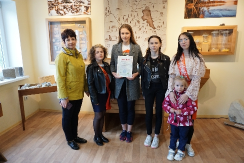
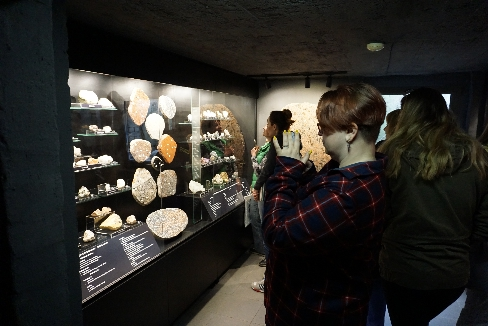
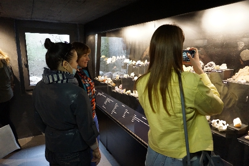
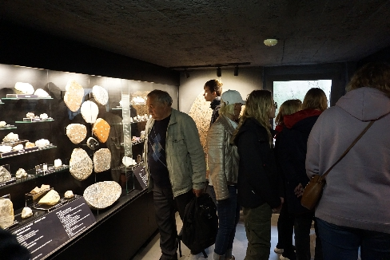
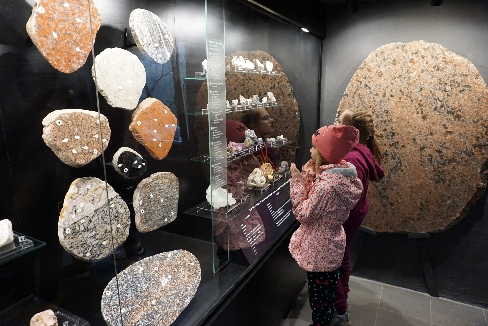
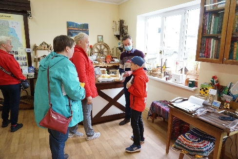
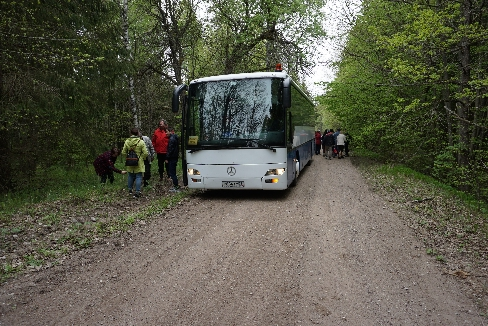
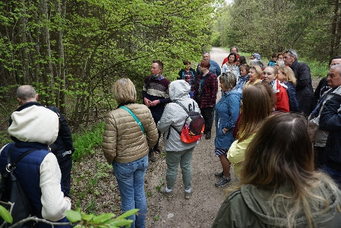
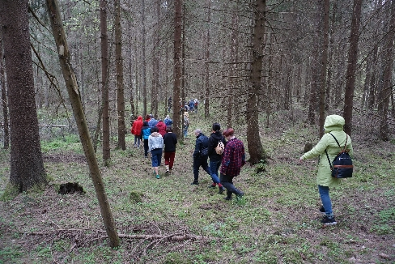
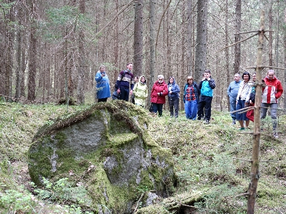
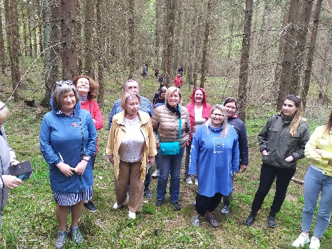
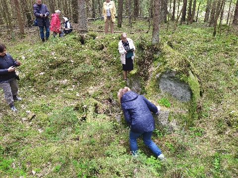
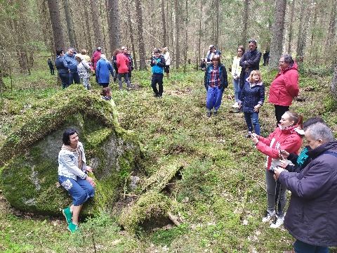
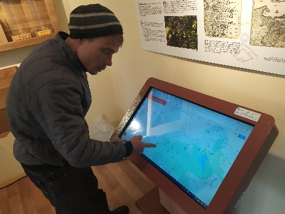
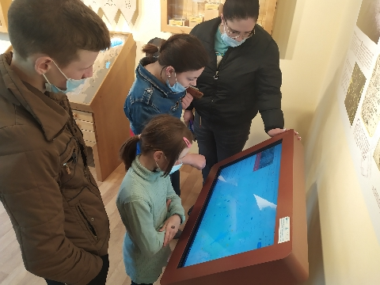
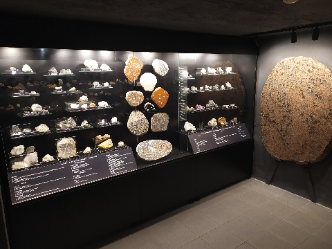
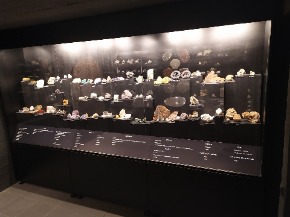
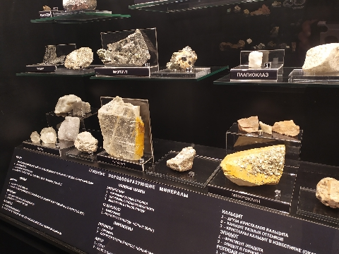
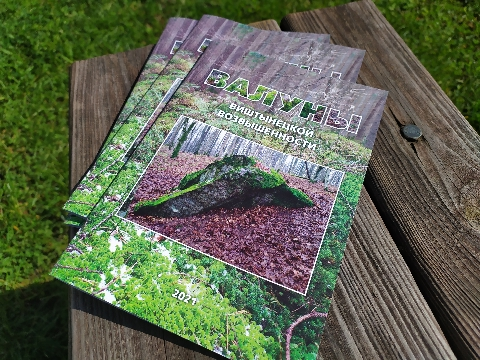
Рождение новой музейной экспозиции - это всегда событие. «Анатомия камня» - так называется экспозиция, открытие которой состоялось 22 мая в посёлке Краснолесье. В этот день на торжественном мероприятии были представлены результаты проекта Виштынецкого экомузея «В гости к камню», поддержанного Фондом президентских грантов. Он был направлен на привлечение внимания к валунным камням Виштынецкой возвышенности — особым природным объектам, свидетелям грандиозных геологических событий нашей планеты, которые уже сами по себе являются памятниками природы. Поэтому результатом проекта стала не только экспозиция музея, знакомящая с минералогическим составом горных пород, но также брошюра о валунах Виштынецкой возвышенности и интерактивная карта каменных гигантов самого юго-восточного уголка Калининградской области, в создании которой непосредственное участие приняли ученики "Школы будущего" из посёлка Большое Исаково и местные жители, ставшие участниками экспедиций, оказавшие помощь в обнаружении и описании валунов. В рамках состоявшегося открытия были награждены дипломами и грамотами победители творческого конкурса «Легенда о камне», который проводился среди школьников Краснолесья и «Школы будущего». Участники мероприятия в этот день стали не только первыми посетителями экспозиции, обладателями брошюры, но и смогли вместе с сотрудниками природного парка «Виштынецкий» отправиться к одному из малоизвестных валунов на его территории, а также посетить место, где раньше располагался один из каменных памятников природы, к сожалению, уже утраченный. Было предложено некоторые валуны включить в познавательные маршруты природного парка, а два из них представить в региональное правительство для придания статуса "памятник природы".
Виштынецкий экомузей приглашает всех желающих стать гостями Краснолесья и посетить новую экспозицию о невероятном по красоте мире минералов самых значимых валунов и самых простых камней, а также отправиться в гости к камню. Спланировать своё путешествие вам поможет интерактивная карта валунов Виштынецкой возвышенности. Более того, у вас есть возможность пополнить её, если вы отыщите крупный валун, которого пока не указан на ней.
Партнёры музея по проекту
- МБОУ СОШ "Школа будущего" (пос. Большое Исаково);

- Отдел культуры Администрации муниципального образования «Нестеровский район».
При информационной поддержке Общественной палаты Калининградской области

Контактная информация:
Алексей Соколов - руководитель проекта, директор КРОУ "Виштынецкий эколого-исторический музей",
тел.: +7 - 9062126823, эл. почта: wystynez@bk.ru
Алексей Соколов - руководитель проекта, директор КРОУ "Виштынецкий эколого-исторический музей",
тел.: +7 - 9062126823, эл. почта: wystynez@bk.ru
Самые выдающиеся валуны Калининградской области теперь на карте! Из чего они состоят и какие тайны скрывают? Всё это можно узнать в новой экспозиции музея «Анатомия камня»!
22 мая в Виштынецком эколого-историческом музее состоялось представление результатов проекта
"В гости к камню".
22 мая в Виштынецком эколого-историческом музее состоялось представление результатов проекта
"В гости к камню".
В музее создана новая экспозиция, которая знакомит посетителей с минералогическим составом горных пород валунов Виштынецкой возвышенности.
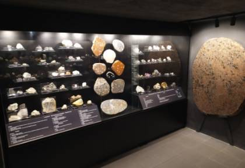
В рамках проекта была подготовлена брошюра о валунах Виштынецкой возвышенности, в которой приведены данные о местоположении самых примечательных каменных великанов, а также их особенностях, включая легенды о некоторых из них.
Данные о валунах Виштынецкой возвышенности также обобщены в интерактивной карте, которая доступна в сети всем желающим.
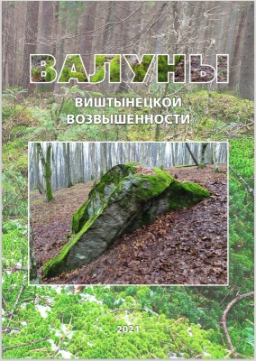
Нажмите на карту для перехода.
Виштынецкий экомузей, команда проекта выражает особую благодарность своим партнёрам: МБОУ СОШ «Школа будущего» посёлка Большое Исаково и Администрации МО «Нестеровский городской округ», информационному партнёру Общественной палате Калининградской области, сотрудникам регионального природного парка «Виштынецкий» и местным жителям, которые помогали в сборе информации о валунах, став полноценными участниками проекта: Виктору и Татьяне Шумилло, Ольге Осиповой, Александру Казённову, Евгению и Екатерине Ждановым, Эдуарду и Татьяне Карлецким, Александру Самсонкину и Александру Степанову. Благодарим Людмилу Иванькович за помощь при подготовке брошюры, директора "Школы будущего" Алексея Голубицкого и Татьяну Талецкую за организацию экспедиции школьников и партнёрскую поддержку проекта, а также семью Елены и Романа Уфимцевых, Виктора Юхневского и Игоря Чеснулевичуса за содействие по созданию пространства экспозиции. Благодарим компанию "Родионов камень". Виштынецкий экомузей сердечно благодарит художника проекта Розу Ткаченко, научного консультанта-геолога проекта Татьяну Борисовну Колесник, всех дарителей минералов и друзей музея за участие, помощь и поддержку.
Проект «В гости к камню» реализуется с использованием гранта Президента Российской Федерации, предоставленного Фондом президентских грантов.

Фото: В. Лукошевичус, А. Володина, А. Соколов
22 мая 2021